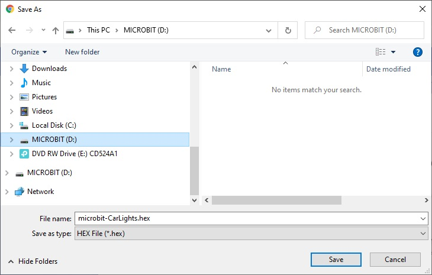

Development Environment
Microbit devices are programmed using a web-browser online at site: https://makecode.microbit.org/
Your project will be saved online. You can code a blockly project by connecting blocks in the Blocks Tab:
and Downloading code to the microbit
You download software to the microbit device by connecting the microbit via usb to your personal computer then press the download button on the web-browser and then select the micro-bit drive

The microbit device will start to blink. When it finishes blinking, the download is complete.